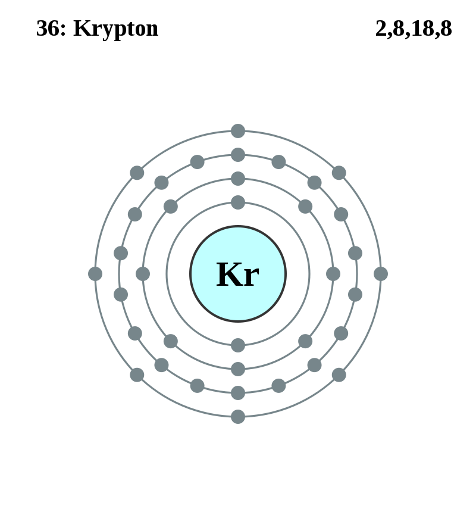

Basic Information about the element
Basic Information about the element
Name: Krypton
Symbol: Kr
Atomic Number: 36

1s2 2s2 2p6 3s2 3p6 3d10 4s2 4p6
The chemical element krypton is classed as a noble gas.
It was discovered in 1898 by Sir William Ramsay.
| Number of Protons/Electrons: | 36 |
| Number of Neutrons: | 48 |
| Atomic Mass: | 83.8 amu |
| Melting Point: | -157.2 °C |
| Boiling Point: | -153.4 °C |
| Classification: | Noble Gas |
| Uses: | Krypton is used in lighting as it is a stable gas. |